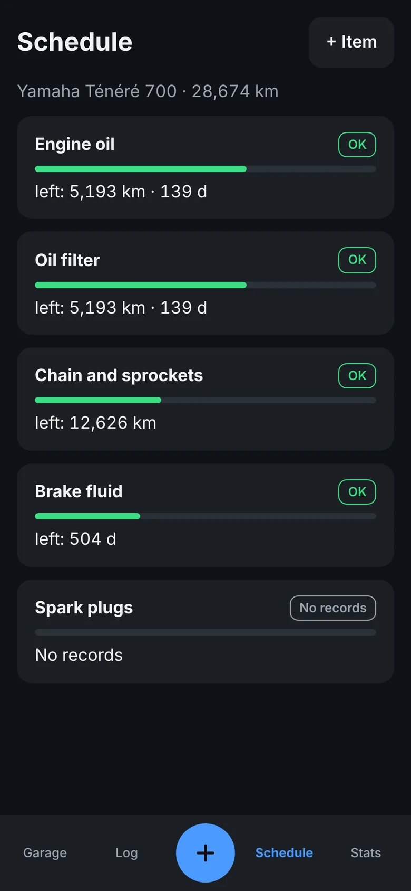
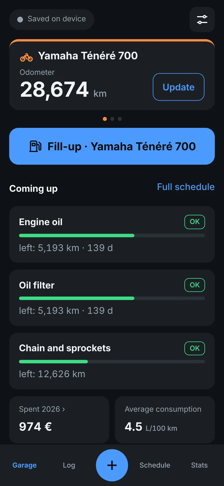

Дорога.↗ Гараж.↘ Облік.↘
Канал про мотоцикли без глянцю: поїздки, обслуговування власноруч і чесні цифри — скільки насправді коштує володіння.
Про мотоцикли — як є.
Знімаю те, що роблю сам: куди їду, що міняю в гаражі і скільки це коштує. Без постановки й без оглядів «на один день».
Поїздки
Маршрути, погода, втома — і все, чого не показують у рекламі.
Власноруч
Мастило, ланцюг, гальма, витратні матеріали: крок за кроком, з моментами затягування й артикулами.
Чесні цифри
Кожна заправка й кожен чек записані. З цього й виросли таблиця та застосунок.



Tolimoto LogBETA
Журнал ТО та заправок для мотоцикла й авто. Пам'ятає, коли міняти мастило, рахує витрату пального й видатки — і зберігає все у вас.
- Заправка одним дотикомГоловна кнопка на першому екрані, транспорт обирається свайпом.
- Регламент за пробігом і часомЩо і коли міняти — зі зрозумілим статусом.
- Витрата й видаткиЗа кожною заправкою, за роками і вартість кілометра.
- Без реєстрації та без мережіЗаписи зберігаються просто на телефоні.
- Google Таблиця — за бажаннямСинхронізація в обидва боки, фото чеків на вашому Диску.
- Імпорт з Fuelly і FuelioІсторія заправок переїжджає за хвилину.
У Tolimoto немає серверів з вашими даними. Записи зберігаються на пристрої, а якщо підключите Google — у вашій власній таблиці й папці на Диску. Застосунок бачить лише файли, які створив сам. Політика конфіденційності
Сам застосунок поки що англійською та російською; інші мови готуються.
Як встановити
Tolimoto Log — вебзастосунок: нічого не треба завантажувати з магазину. Додайте його на початковий екран, і він відкриватиметься на весь екран, як звичайний, і працюватиме без мережі.
- 1. Відкрийте застосунок у SafariПерейдіть на app.tolimoto.com у Safari — стандартному браузері iPhone.
- 2. Торкніться «Поширити»Квадрат зі стрілкою вгору на панелі внизу екрана.
- 3. Оберіть «На початковий екран»Якщо пункту не видно одразу, прогорніть список донизу.
- 4. Торкніться «Додати»Назву Tolimoto Log можна залишити або скоротити.
- 5. Відкривайте з початкового екранаНадалі запускайте застосунок з іконки, а не з Safari.
- 1. Відкрийте застосунок у ChromeПерейдіть на app.tolimoto.com у Chrome.
- 2. Відкрийте менюТри крапки у правому верхньому куті.
- 3. Оберіть «Установити додаток»На деяких телефонах пункт називається «Додати на головний екран».
- 4. ПідтвердьтеТоркніться «Установити». Chrome може й сам запропонувати це внизу екрана.
- 5. Відкривайте з головного екранаІконка з'явиться на головному екрані та у списку застосунків.
Спершу встановіть, потім записуйте. На iPhone встановлений застосунок зберігає дані окремо від Safari. Додайте його на початковий екран до того, як почнете вводити записи, — або перенесіть їх резервною копією JSON із налаштувань.
На Android застосунок працює в Chrome. Робився й перевірявся він передусім на iPhone, тож якщо щось виглядає не так — напишіть нам. Малюнки спрощені; назви пунктів меню можуть трохи відрізнятися в різних версіях системи.
З чого все почалося.
Безкоштовний шаблон Google Таблиці: регламент, історія робіт і видатки за роками. Скопіюйте собі й ведіть свій мотоцикл.
Поки що російською. Українська, англійська, естонська, польська та латиська версії готуються.
Напишіть нам.
Питання про застосунок чи таблицю, ідеї для відео, співпраця — пишіть.